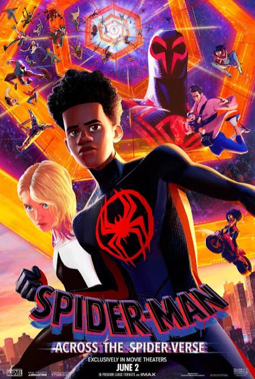
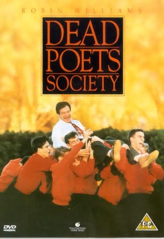
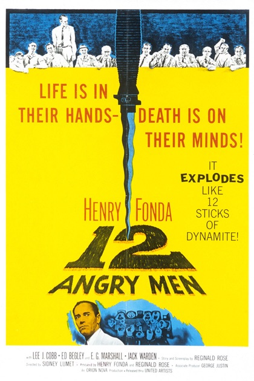
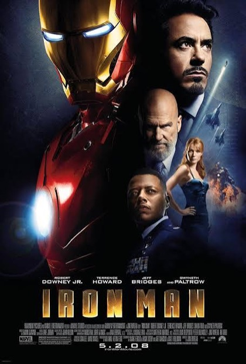
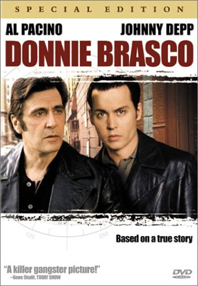
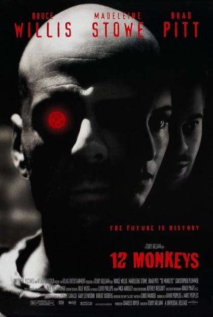

Movies
210 and counting. The ones I’d defend to anyone, the ones I just saw, and the ones I keep meaning to get to.
All-time favourites
-

Spider-Man: Across the Spider-Verse
2023I loved the visual creativity and music in the film.
-

Dead Poets Society
1989I really enjoyed the lesson of the film: to think outside the box, and that the values of ‘being right’ may not always align with what you think is right.
-

12 Angry Men
1957I love how the architect defends his viewpoint and doesn’t agree with the status quo just because it seems ‘obvious’.
-

Iron Man
2008A classic childhood comfort movie. I like how mechanical it feels and how it shows off Tony Stark’s brilliance — especially now that artificial intelligence is starting to replicate JARVIS-level intelligence.
-

Donnie Brasco
1997The acting was pristine, and I loved watching Donnie himself navigate the challenge of what he believes to be the correct path.
-

12 Monkeys
1995The sci-fi plot set in the future, paired with the mind-bending twist at the end, has you questioning your own judgement.
Recently watched
- Film title YYYY
- Film title YYYY
- Film title YYYY
- Film title YYYY
- Film title YYYY
Watchlist
- 01Film titleYYYY
- 02Film titleYYYY
- 03Film titleYYYY
- 04Film titleYYYY
- 05Film titleYYYY
- 06Film titleYYYY
- 07Film titleYYYY
- 08Film titleYYYY